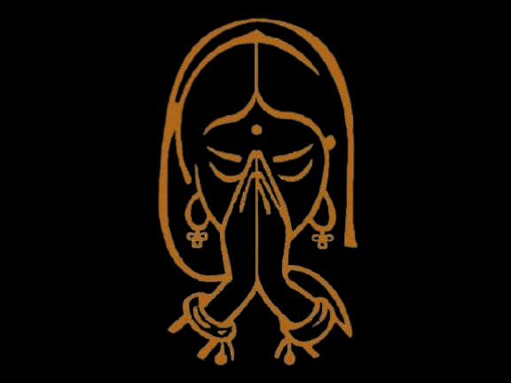
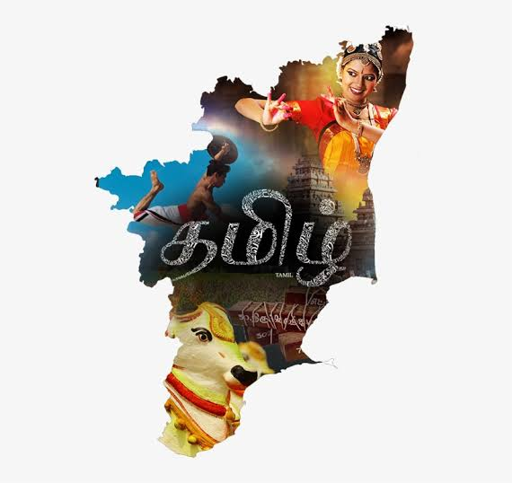
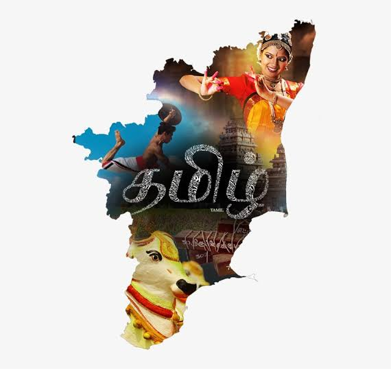
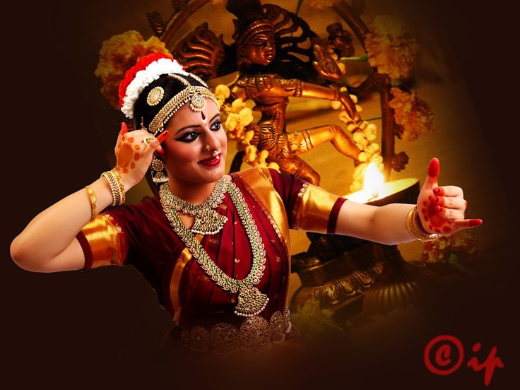
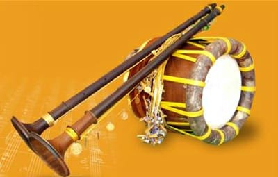
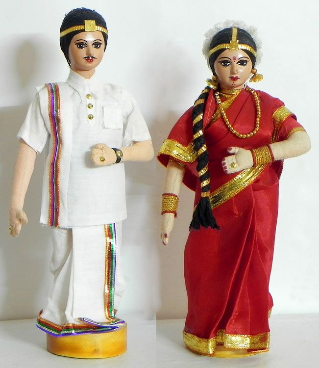

CULTURES OF TAMILNADU



 

TRADITIONS OF TAMILNADU
LANGUAGE
Tamil (தமிழ் ) is a classical language and one of the major languages of the Dravidian language family. Origin of Tamil language is from Kumarikandam (Lemuria).Tamil is the first language of the majority in the southern Indian state.
KINGDOMS
In the olden golden days, Tamil Nadu constituted three kingdoms.They were ruled by Pandiayas kingdom in Tamilnadu, Cheras kingdom in Tamilnadu, Cholas kingdom in TamilnaduAll three kingdoms were patriotic towards their language.
DANCE
Bharatanatyam is a major genre of Indian classical dance that originated in Tamil Nadu. Traditionally, Bharatanatyam has been a solo dance that was performed exclusively by women,and expressed South Indian religious themes and spiritual ideas, particularly of Shaivism, but also of Vaishnavism and Shaktism.
MUSIC
Pann, which is the classical music form of Southern India, has a long history in Tamil Nadu. Later the name was mistakenly changed as Carnatic music. Even today Pannisai is sung in temple festivals. Tamil Nadu has produced a number of famous performers, as well as a closely related classical dance form Bharatha Natyam.
FOOD
Tamil cuisine is a culinary style originating in the southern Indian state Tamil Nadu and other parts of South Asia like Sri Lanka. Vegetarian cuisine is popular among the Tamil people and has been since ancient times. However, meats along with rice, legumes and lentils are also popular.
DRESS
Traditional Dress of Tamil Nadu portrays the cultural and traditional essence of the state. The men of Tamil Nadu wear traditional attires like Lungi or Dhoti, with Angavastra and a shirt. The women adorn themselves in traditional Saree .